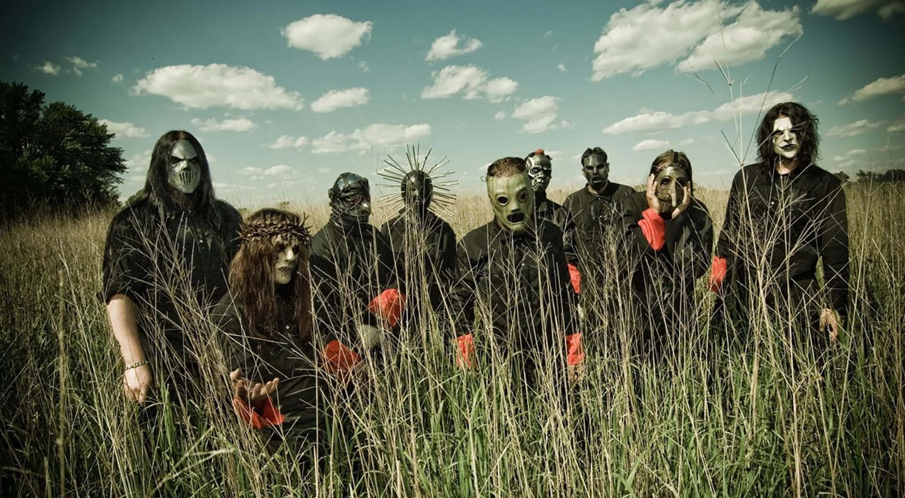

Ранний Slipknot складывался вокруг нескольких людей,
которые постепенно собирали вокруг себя
сценическую «бригаду»: перкуссия, сэмплы, диджейские партии, дополнительный вокал, два гитариста и ритм-секция.
Идея расширенного состава позволяла делать живой звук физически плотным: шумовая перкуссия, скретчи,
индустриальные текстуры и «стена» риффов работали как единый механизм.
Группа образована в 1995 году Шоном Крэйем,
Джои Джордисоном и басистом Полом Греем.
К сожалению, Джои и Грей умерли.
Состав группы менялся множество раз, некоторые уходили из группы из-за денег,
некоторых забирала смерть.
Не менее важно упомянуть, что Джои Джордисон в последние годы имел проблемы со здоровьем.
у него отказывали ноги, даже прямо на концертах. Позже он попал в больницу, где его навестил
только один участник группы. Когда Джордисон выписался из больницы,
он узнал, что его выгнали из группы.
Умер Джои во сне.
Дебютный студийный альбом Slipknot вышел 29 июня
1999 года
на Roadrunner Records и стал той точкой, после которой группу уже невозможно было игнорировать.
Продюсер Росс Робинсон помог
сделать звук более собранным и одновременно сохранить «животную» энергию.
Альбом закрепил ключевые элементы: резкие динамические перепады,
агрессивный грув, кричащие припевы и ощущение катарсиса,
которое цепляло не только
фанатов металла,
но и подростковую альтернативную аудиторию конца 1990-х.
Внутри группы к этому моменту
стабилизировалась формула «девяти»:
ударные и перкуссия, бас, две гитары, диджей,
сэмплы/клавиши и ведущий вокал. Эта конфигурация на долгие годы станет каноном, от которого
Slipknot будут отталкиваться даже тогда,
когда состав начнёт меняться.
Но за внешней агрессией всегда стояла система.
Slipknot строили карьеру не только на ярости
и эпатаже, а на дисциплине, продуманной эстетике и умении менять форму,
не изменяя ядру. Каждая эпоха получала новые маски, новые визуальные коды и
новый звук — от жёсткой, почти хаотичной ранней смеси ню-метала, хардкора и экстремальных жанров до более структурированных,
«песенных» релизов и обратно к экспериментам.
К середине 2020-х Slipknot одновременно живут в двух режимах.
С одной стороны, это наследие: песни конца 1990-х и начала 2000-х давно стали классикой тяжёлой сцены.
С другой — постоянное обновление: новые маски,
перестройка состава, переосмысление звучания и формата релизов.
В 2025 году вокруг дебютного альбома активно обсуждались юбилейные инициативы и переиздания, что ещё раз подчеркнуло: Slipknot воспринимаются не просто как группа, а как эпоха, к которой возвращаются снова и снова.
Секрет их долговечности, похоже, в том, что Slipknot никогда не пытались быть «приятными». Они делали музыку и шоу как способ выговориться, выжить и перезапустить себя — а затем научились превращать это в профессиональную систему. Когда хаос становится дисциплиной, он перестаёт быть одноразовым. И именно поэтому Slipknot остаются на вершине: их ярость — не поза, а механизм, который умеет работать в любую эпоху.
Сегодня Slipknot — это история о том, как группа из Айовы построила собственный мир, где маски не скрывают, а проявляют характер; где девять человек на сцене звучат как один организм; и где тяжёлая музыка может быть одновременно агрессивной, умной и массовой.
Интересные факты:
Во время фестиваля Mayhem в Сиэтле в 2008 году Сид Уилсон прыгнул на сцену с высоты, сломав
при этом обе пятки. Однако он вернулся на своё место
и отыграл остаток шоу со сломанными ногами.
На концерте в Москве публика
устроила флешмоб в память о погибшем басисте Поле Грее.
По всей площади зала одновременно подняли листы с цифрой 2 в круге — номером, за которым в группе числился покойный Пол Грей. Флешмоб произвёл столь сильное впечатление на вокалиста
Кори Тейлора, что тот некоторое время не мог произнести ни слова